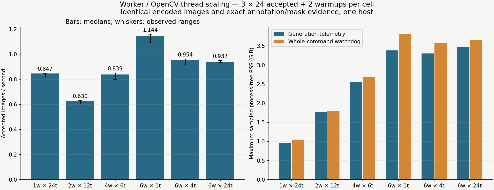
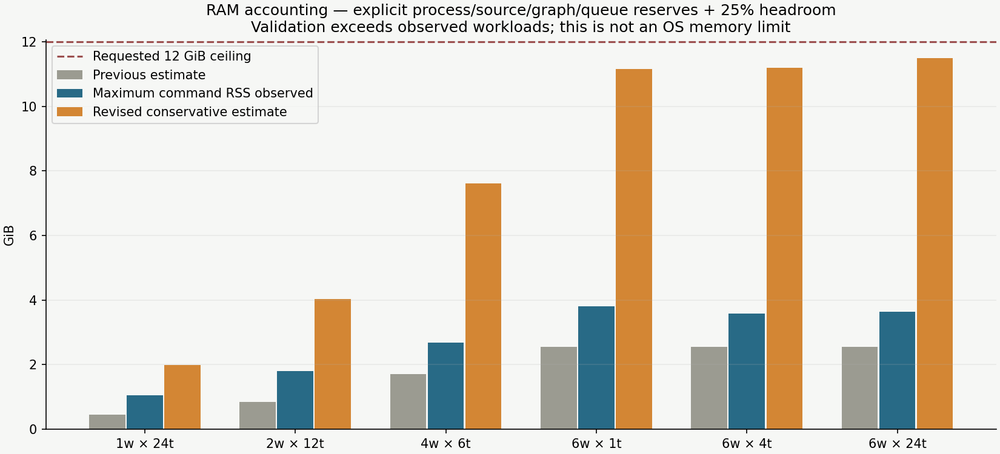

Six workers with24 OpenCV threads each is a useful oversubscription stress case. Requested threads do not establish active OS parallelism. Compare measured throughput, memory and thread observations independently. Renderer source and all encoded images/annotation/mask signatures are unchanged across treatments.
1280² heavy landing pads, standard background mix, cache disabled, four QA outputs. Three rotating-order repetitions reuse24 deterministic scenes; two warmups are in separate pools. Generation throughput includes startup for its own pool and excludes preparation/separate warmup. Whole-command observations include both. Range bars are observed ranges, not confidence intervals.
| Case | Median accepted/s (range) | Max command RSS GiB | Revised estimate GiB | Observed command thread peak |
|---|---|---|---|---|
| one24 | 0.847 (0.819–0.850) | 1.05 | 1.98 | 94 |
| two12 | 0.630 (0.602–0.632) | 1.80 | 4.03 | 71 |
| four6 | 0.839 (0.800–0.852) | 2.69 | 7.61 | 71 |
| six1 | 1.144 (1.091–1.160) | 3.81 | 11.15 | 71 |
| six4 | 0.954 (0.913–0.962) | 3.58 | 11.20 | 71 |
| six24 | 0.937 (0.937–0.950) | 3.64 | 11.49 | 79 |


The watchdog used4.5 GiB summed RSS,1.5 GiB available host-memory floor,64 MiB additional host swap-out and180-second cell timeout. This lower experimental limit reflects current host availability; the requested12 GiB budget is not a hard allocation bound. New estimates are recalculated from the same policies with the revised model; they did not alter the measured renderer runs.
The planner now checks the complete estimate before choosing automatic workers and respects explicit queue capacity. Source dimension headers, cover expansion, graph/scratch storage, instance masks, processes, native reserves, serialized return buffers, caches and headroom are reported as components. Explicit worker counts still run with advisory warnings. Auto can choose fewer workers. Every revised estimate exceeds this study’s observed workloads; arbitrary effects/native libraries still prevent a universal guarantee.
Per-repeat measurements, identities, guard limits and estimate components